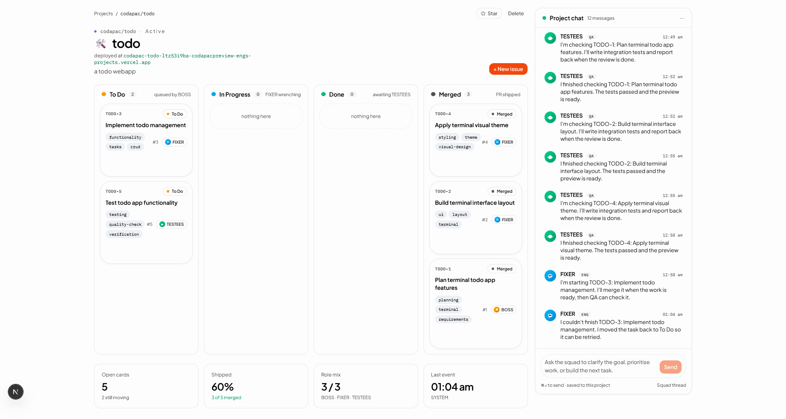

A familiar software delivery workspace for non-technical builders.
01 — The problem
Founders, PMs, and domain experts already shape the product every day. But their role gets flattened into chats, documents, and waiting for someone technical to translate.
Today · Chats
Ideas and decisions scatter across Slack threads, DMs, and AI replies. Nothing survives the week.
Today · Docs
Specs and briefs pile up in Notion. They describe the work, but never actually move it forward.
Today · Waiting
Progress stalls behind a developer who has to interpret, estimate, and relay every change.
Pure chat interfaces aren't enough — software work is naturally task-based, stateful, and collaborative.
02 — The insight
Everyone who ships work is comfortable with boards, tasks, and visible workflow. Software should feel the same — not a black box.
Chat only
Talk. Hope.
Codapac workspace
Plan. Build. See it ship.
03 — The solution
Chat, planning, execution, QA, and deployment — in one familiar environment that feels like a real product workspace.
Shared conversation with the AI squad, scoped to one project.
Plan, Build, QA, Shipped — the lanes every team already knows.
Every request becomes reviewable tasks, not an invisible prompt.
Live status as agents pick up, work, and hand off each task.
Tests, checks, and previews surfaced beside the work, not hidden.
Preview URLs and releases shown in-project, one click to open.
04 — Why this matters
The value isn't only what the AI produces — it's what the humans around it can see, steer, and believe in.
Control
Shape scope, approve tasks, and redirect work without booking a sync with a developer.
Visibility
Plans, progress, QA, and deploys live on one board — nothing hides in a developer's head.
Trust
Structured delivery replaces "almost done" with a status anyone on the team can verify.
05 — How it works
Six familiar steps. No ceremony. No sprint-planning theatre.
Name it. Pick a repo or start fresh.
Plain English. No templates, no jargon.
Approve, edit, or reorder on the board.
Watch agents move tasks through the lanes.
Checks, tests, and reviews — inline.
A live deployed URL, ready to share.
The important part: you're not just reading a chat reply. You're watching a real project move.
06 — Key features
Every feature borrows a pattern users already know — and puts an AI squad behind it.
Project list, boards, tasks — the shapes teams already use.
Work lives as tasks you can scan, not messages you have to reread.
See a task move: Plan → Build → QA → Shipped, in real time.
Planning, build, QA, and deploy — one surface, one source of truth.
Deployed URL surfaced directly in the project — no copy-paste hunts.
07 — What makes Codapac different
Existing tools each solve one slice. Codapac is the first that assembles all of them for non-technical builders.
08 — Technical approach
The hard problem isn't picking a model — it's coordinating state, context, and tool use across a living project.

09 — Demo
● Prompt
"Make the hero feel more startup and add pricing."
Workspace spun up from one sentence.
Tasks drafted, scoped, ready to review.
Agents execute, state visible on the board.
Checks run, mobile + copy verified.
codapac.app/project/acme-landing
Watch a single prompt become a project, a task board, execution, QA, and a live URL — the workspace is the story, not the chat.
10 — Who this unlocks
Codapac lowers the friction of joining and driving software projects — wherever ideas start, but developers haven't yet.
Move from pitch to prototype without hiring first.
Turn specs into shipped increments, not status updates.
Go from idea to demo without getting stuck on setup.
Ship polished projects in 48 hours, not 48% complete.
Contribute to real code without waiting for a translator.
● The takeaway
Codapac gives non-technical people a real environment to participate in software — with structured visibility and control, not just AI output.
Thank you.
— For the people who shape products, but don't write code.